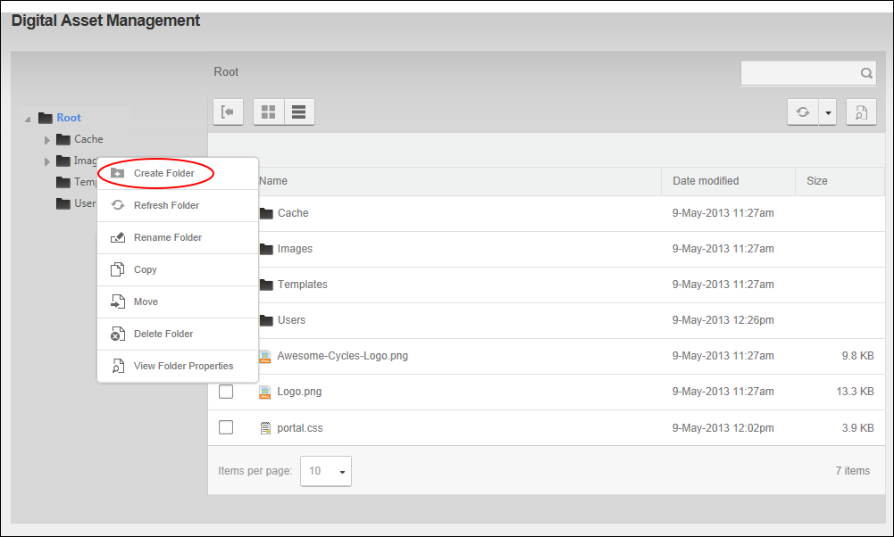
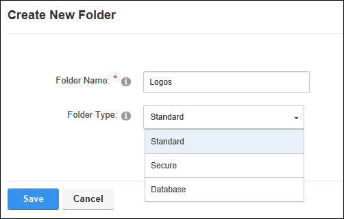
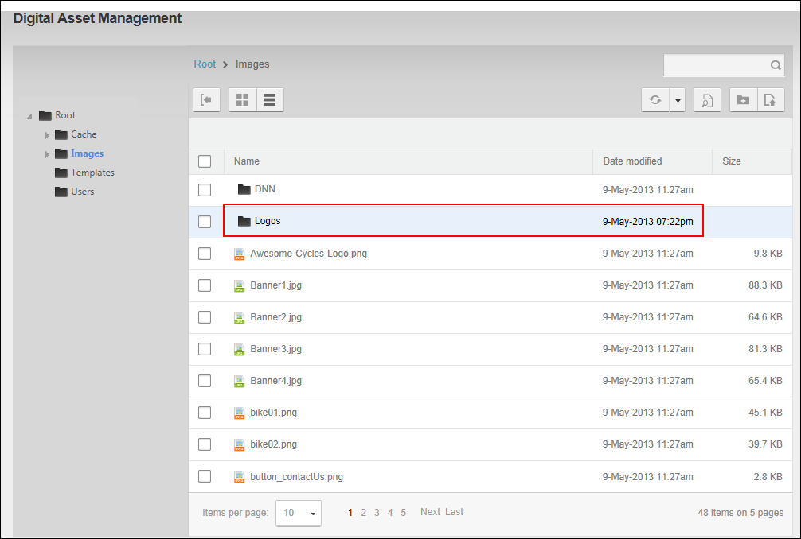

Adding a SubFolder
How to add a subfolder to the Digital Asset Management Pro module. The new folder will inherit
the permissions assigned to its parent folder.
Any DNN Platform user, including anonymous users, who have been granted Write
to Folder permission to a folder can add subfolders.
Any Evoq Content user, including anonymous users, who have been granted Add permission to a folder can add subfolders.
Amazon, Azure and UNC folder types must be created before these folder types can be selected. See "Adding an Amazon S3 Folder Type", See "Adding a UNC Folder Type", or See "Adding a Windows Azure Folder Type"
- Navigate to Admin >
 File Management - OR - Go to a Digital Asset Management Pro module.
File Management - OR - Go to a Digital Asset Management Pro module.
- Navigate to the folder that you want to add a subfolder beneath. See "Navigating to and Selecting Folders"
- Right click on the folder name and select Create Folder - OR - Click the Create New Folder button on the toolbar.

- In the Create New Folder window complete the following:
- In the Folder Name text box, enter a name for the new folder.
- At Folder Type, select the type of folder you want to create. The default option displayed will be inherited from the parent folder or if you are adding a folder to the root folder, the default type will be Standard unless otherwise configured (See "Configuring Digital Asset Management Settings").The available options are:
- Standard: Select this option to store most of your files.
- Secure: Select this option if you want to encrypt the file name to prevent direct linking to this file.
- Database: Stores files as a byte array in the database rather than in the usual file system.
- Amazon Folder Provider: Stores files on the Amazon service.
- Azure Folder Provider: Stores files on the Azure service.
- UNC Folder Provider: A UNC (Universal/Uniform Naming Convention) path describes the location of a volume, directory, or file. UNC paths apply to all operating systems, are not case-sensitive and follow the format \\server\volume\directory\file.

- Click the
Save button. The new folder is now added and displayed in the Files Window.
- Optional. If this folder requires different permissions than its parent folder, See "Modifying Folder Permissions". To set file versioning and/or workflow for this folder, See "Managing Folder Properties"
v
The Newly Added Folder displayed in the Folder Explorer